Made by
Seth Kranzler
PART THE FOURTH
"THE 150 MURDEROUS PASSIONS, OR THOSE BELONGING TO THE FOURTH CLASS, COMPOSING THE TWENTY-EIGHT DAYS OF FEBRUARY SPENT IN HEARING THE"
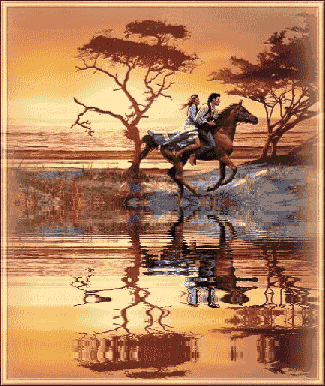
NARRATIONS OF MADAME DESGRANGES; INTERSPERSED AMONGST WHICH ARE THE
SCANDALOUS DOINGS AT THE CHTEAU DURING THAT MONTH; ALL BEING SET DOWN
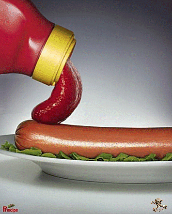
"IN THE FORM OF A JOURNAL"
""
(DRAFT)
Begin by giving a full description of the new situation which exists in February; there has been a radical change in the appearance of things
The four original wives have been repudiated, but the Bishop has extended his protection to Julie, whom he keeps near him as a kind of servant to wait upon him; Duclos has been allowed to share her quarters with Constance, whose fruit Messieurs are eager to keep from spoiling; Aline and Adelaide have been driven out of house and home and now sleep amongst animals intended for their Lordships' table
The sultanas Augustine, Zelmire, Fanny, and Sophie have replaced the wives and now fulfill all their functions, to wit: as wipers in the chapel, as waitresses at the meals, as couch companions, as Messieurs' bed companions at night
"Apart from the fucker, who changes from day to day, Messieurs have: The Duc: Augustine, Zéphyr, and Duclos in his bed, together with his fucker; he sleeps surrounded by the four of them, and Marie occupies a sofa in his bedchamber; Curval: the Président likewise sleeps amidst Adonis, Zelmire, a fucker, and Fanchon; his room is otherwise empty;"
Durcet sleeps amidst Hyacinthe, Fanny, a fucker, and Martaine (check the foregoing), and he has Louison lie upon a neighboring divan
The Bishop sleeps amidst Céladon, Sophie, a fucker, and Julie; Thérèse sleeps upon the divan
""
Which reveals that each of the little ménages, Zéphyr and Augustine, Adonis and Zelmire, Hyacinthe and Fanny, Céladon and Sophie, all of whom are married, belong, husband and wife, to a single master
Only four little girls remain in the girls' harem, and four in the boys'
Champville sleeps in the girls' quarters, Desgranges in the boys' quarters
"Aline is in the stable, as we pointed out, and Constance is in Duclos' room, but alone there since Duclos spends every night"
"in the Duc's bed"
"Dinner is always served by the four sultanas (by, that is to say, the four new wives), and supper by the remaining four sultanas; a quatrain always serves coffee; but the quatrains formerly allocated to each niche in the auditorium are now reduced in number to one boy and one girl"
The reader will recall our mention of the pillars in the auditorium; at the beginning of each séance, Aline is attached to one of them, Adelaide to the other, their buttocks facing out toward the alcoves, and near each pillar is a little table covered with assorted punitive instruments; and so it is the two women are at all times ready to receive the lash
"Constance has permission to sit with the storytellers"
Each duenna keeps close to her couple, and Julie, completely unclothed, wanders from couch to couch, taking orders and executing them upon the spot
As always, one fucker per couch
""
Such is the situation when Desgranges begins her narrations
The friends have also ruled, in a special decree, that, during this month, Aline, Adelaide, Augustine, and Zelmire shall be surrendered to Messieurs' brutal passions, and that Messieurs are at liberty, upon the described day, either to immolate them privately or to invite whichever of their friends they please to witness the sacrifice; and that with what regards Constance, she shall be employed for the celebration of the final week, a full explanation of which shall be given in due time and place
Should the Duc and Curval, who by this arrangement are to be made widowers, be disposed to take another wife to care for their needs until the end of the holiday, they shall be able to do so by making a selection from amongst the four remaining sultanas
But the pillars will remain ungarnished when the two women who garnish them now shall have been bidden a last farewell
Desgranges starts, and after having reminded her auditors that henceforth the tales shall be those of an exclusively murderous character, she says that she will be careful, as their Lordships have enjoined her to be, to enter into the most minute details, and above all to indicate with what ordinary caprices these libertine assassins preface their more serious exercises; thus, their Lordships will be able to perceive and judge their relationships and associations, and to see how an example of simple libertinage, rectified and elaborated by an unmannerly and unprincipled individual, may lead straight to murder, and to what kind of murder
"Then she begins"
THE 1ST OF FEBRUARY
"1"
He used to enjoy amusing himself with a beggarwoman who had not had a bit to eat in three days, and his second passion is to leave a woman to die of hunger in a dungeon; he keeps a close watch upon her and frigs himself while examining her, but does not discharge until the day she perishes
""
2
He maintains her in her prison cell, toying with her for a long season, gradually diminishing her daily portion of food; beforehand, he has her shit, and eats her turd upon a platter
""
3
He formerly liked to suck the mouth and swallow its saliva; in recent days he has developed the passion of immuring a woman in a dungeon with food to last no more than a fortnight; on the thirtieth day, he enters her prison and frigs himself upon the corpse
4
First, he would have her kiss, then he would slowly destroy her by preventing her from drinking although feeding her all she wanted to eat
""
5
He would flog, then later kill the woman by depriving her of sleep
That same evening, Michette, after having eaten a big supper, is hung head downward until she has vomited everything upon Curval, who stands frigging himself beneath her and eating the manna that descends from on high
THE 2ND
6
His first passion was to have her shit into his mouth, and he would eat it as it emerged; nowadays he feeds her a diet of worthless bread and cheap wine
A month on this fare and she starves to death
7
"He was once a great cunt-fucker; now he gives the woman a venereal distemper by injection, but of such virulence she croaks in very short order"
""
8
"As a youth, he was fond of receiving vomit in his mouth, now, by means of a certain decoction, he gives her a deathly fever which results in her speedy demise"
9
He was once wont to gather shit from assholes, presently injects an enema containing toxic ingredients dissolved in boiling water or aqua fortis
10
"Once a famous fustigator, today he binds a woman to a pivot upon which she uninterruptedly revolves until dead"
That evening, an enema of boiling water is given to Rosette the moment after the Duc has finished embuggering her
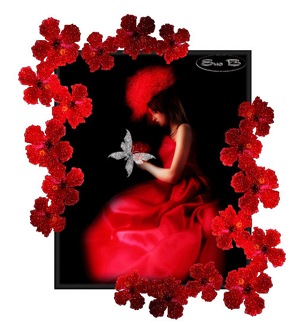
THE 3RD
11
"He used to like to slap the whore's face; as a mature man, he twists her head"
"around until it faces backward"
When so adjusted, one may simultaneously look at her face and at her buttocks
"12"
Addicted to bestiality as a youngster, he now likes to have a girl depucelated by a stallion while he looks on
She ordinarily dies
13
"Once an ass-fucker, he now buries the girl up to her waist and maintains her thus till the lower half of her body rots"
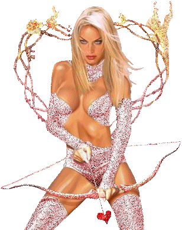
14
Previously, he was wont to frig her clitoris, and he still does so, but more vigorously, employing one of his servants to keep at the work until the girl expires
"15"
Gradually perfecting his passion over the years, a fustigator now flogs every part of a woman's body until she perishes
""
That evening, the Duc would have Augustine, endowed with an unusually sensitive clitoris, frigged thereupon by Duclos and Champville, who relieve each other at the post and continue the task until the little lady falls unconscious
THE 4TH
"16"
"His earlier passion was to squeeze the whore's neck, in later years he would tie the girl by the neck"
Before her sits a sumptuous meal, but to reach it she must strangle; otherwise she dies of hunger
17
The same man who slew Duclos' sister and whose taste is to subject the flesh to a prolonged mauling, abuses the breasts and buttocks with such furious violence that his treatment of the whore proves fatal to her
18
The man Martaine mentioned on the 20th of January, he who formerly adored bleeding women, now kills them by dint of repeated bloodlettings
"19"
He whose passion in times past was to make a naked woman run until she dropped from exhaustion, in this age of unbridled libertinage shuts her up in a steaming bathhouse where she dies of asphyxiation
"20"
"He whom Duclos cited earlier, the gentleman who liked to be wrapped in swaddling clothes and fed whoreshit in a spoon rather than pap, swathes a girl so tightly in baby's blankets that he kills her"
""
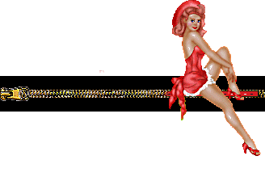
Shortly before the company moved into the auditorium that afternoon, Curval was found embuggering one of the scullery maids
"He pays the fine; the girl is ordered to reappear at the evening's orgies, where the Duc and the Bishop embugger her in their turn, and she receives two hundred lashes from the hand of each of them"
She's a strapping country girl, twenty-five, in satisfactory health, and has a fine ass
THE 5TH
21
His first passion is for bestiality, his second is to sew the girl into an untanned donkey's skin, her head protruding; he feeds and cares for her until the animal's skin shrinks and crushes her to death
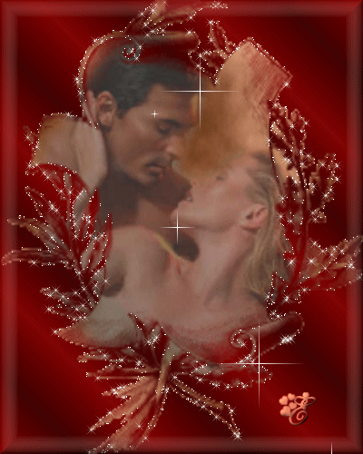
22
He of whom Martaine spoke on the 15th of January and who liked to hang a girl for his amusement, currently amuses himself by hanging her by her feet until the blood rushing to her head kills her
"23"
"Duclos' libertine of the 27th of November who liked to besot his whore, today inserts a funnel into her mouth and floods her with liquids till she dies therefrom"
"24"
Once he was wont to mistreat nipples, but has progressed since then and now buckles a sort of small iron pot over each breast and lowers her over a stove; the iron heats, and she is allowed to perish thus in frightful pain
"25"
His whole delight used to consist in watching a woman swim, but he now casts her into a pond and fishes her out half-drowned, then hangs her by the feet to encourage the water to drain out of her
Once she has returned to her senses, into the pond she goes again, and so on and so forth, till she gives up the ghost
Upon that day and at the same hour, another kitchen servant is found being embuggered, this time by the Duc; he pays the fine, the servant is summoned to the orgies, where everyone cavorts with her, Durcet making good use of her mouth, the others of her bum, and even of her cunt, for she is a virgin, and she is condemned to receive two hundred lashes from each of her employers
She is a girl of eighteen, tall and well made, her hair is auburn in color, and she owns a very fair ass
That same evening, Curval utters the opinion that it is a matter of extreme urgency that Constance be bled again on account of her pregnancy; the Duc embuggers her, and Curval
bleeds her while Augustine frigs his prick against Zelmire's buttocks and while someone else fucks Zelmire
Upon discharging, he executes the puncture; his aim is true
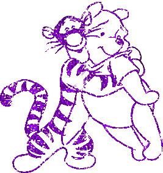
THE 6TH
26
As a young man he used to kick a woman in the ass, tumbling her into a brazier, whence she would emerge before suffering excessively
He has lately refined this stunt, now obliges a girl to stand upright between two blazing fires: one cooks her in front, the other behind; and there she remains until the fat on her body melts
"Desgranges announces that she is going to describe murders which, bringing on a prompt death, cause very little suffering"
27
In former times he would impede respiration by constricting the neck with his hands or by blocking the nose and mouth, but these days he deposits the whore between four mattresses and she suffocates
28
He of whom Martaine said a few words and who used to allow his victim a choice from among three manners of dying (see the 14th of January) has of late begun to blow out the whore's brains, denying her any say in the matter; he embuggers, and upon discharging, pulls the trigger
29
"The man Champville referred to on the 22nd of December as the libertine who made the girl dance with the cat, presently flings the whore from the top of a tower"
She lands on sharp gravel
"He discharges upon hearing her land"
30
"That gentleman who liked to throttle his partner while embuggering her, and whom Martaine described on the 6th of January, has advanced to the stage at which, as he embuggers her, he slips a black silk cord about her neck and strangles her while discharging; this delight, says Desgranges, is one of the most exquisite a libertine can procure himself"
Upon that day, Messieurs celebrate the festival of the fourteenth week, and, in the guise of a woman, Curval becomes Bum-Cleaver's wife, and, as a man, takes Adonis to be his helpmeet;
'tis not till then that child is depucelated, and the event occurs very publicly, while Bum-Cleaver is fucking the Président
Messieurs besot themselves at supper
And they flog Zelmire and Augustine about the loins, the buttocks, the thighs, the belly, the cunt, and the groin, then Curval has Zelmire fucked by Adonis, his new wife, and embuggers both of them one after the other
"THE 7TH"
31
"He once liked to fuck a drowsy woman; he does much better now: he kills her with a strong dose of opium and encunts her during her death-sleep"
32
The same roué she referred to very recently, and who subjects the whore to a series of duckings, has still another passion: tying a stone to her neck, he drowns the woman
""
33
Whereas once he was content to slap her face, now he carries matters further: he pours molten lead into her ear while she is asleep
34
He was fond of whipping her face; Champville spoke of him on the 30th of December (verify that) ; but now he dispatches the girl with a quick hammer blow upon the temple
35
This libertine would previously allow a candle to burn out in a woman's anus; today, he attaches her to a lightning rod during a thunderstorm and awaits a fortuitous stroke
36
A sometime fustigator
He has her bend over with her behind facing the muzzle of a small piece of artillery
"The ball enters her ass"
That day 'tis the Bishop they discover with his prick lodged in the third kitchen servant's asshole
"He pays the fine, the Duc and Curval embugger and cunt-fuck her, for she is also a virgin, then she is given a total of eight hundred stripes, two hundred by each friend"
She is Swiss, nineteen, very fair of skin, very plump, and has a splendid ass
"The cooks complain and say that the service will not be able to continue any longer if Messieurs go on fussing about with the help, and the society agrees to a truce extending until March"
""
Rosette loses a finger that evening, and the wound is cauterized with fire
She is sandwiched between Curval and the Duc during the operation: one fucks her ass, the other her cunt
"Adonis'"
"ass is made generally available that same evening; and so it is that the Duc cunt-fucks one servant and Rosette at the orgies and ass-fucks the same servant, ass-fucks Rosette too, and Adonis"
He is tired
""
"THE 8TH"
37
"His whole delight once lay in beating a woman's entire body with a bull's pizzle;"
'twas to him Martaine alluded as the man who strained all four of his victim's limbs on the rack and broke but one of them
He likes now thoroughly to break the woman on the wheel, but he chokes her to death when he has finished exercising her
38
Martaine's gentleman who would feign a decapitation and have the woman snatched from beneath the blade at the last moment, now severs her head in all good faith
He discharges as the blow falls
He frigs himself
39
Martaine's libertine of the 30th of January who was wont to perform an extensive scarification, now consigns his victims to perish in dungeons
40
He used to be a whipper of pregnant women's bellies, has latterly perfected that by causing an enormous weight to fall on the pregnant woman's belly, thereby crushing her and her fruit at one stroke
41
Formerly, he was known to be fond of the sight of a girl's bare neck, which he would squeeze and molest somewhat; that mild passion has been replaced by the insertion of a pin in a certain spot upon the woman's neck
The pin kills her at once
42
At the beginning he would gently burn various parts of the body with a candle flame, more recently he has begun to hurl women into a glowing furnace where they are consumed instantly
Durcet, his prick very stiff and who during the storytelling has ventured forth twice to flog Adelaide awaiting him at her pillar, proposes to lay her lengthwise in the fire, and after she has had sufficient time to quake over an idea Messieurs would be nothing loath to put into execution, they burn her nipples for the sake of their convenience; Durcet, her husband, burns one, her father, Curval, burns the other
This exciting operation causes both to discharge
THE 9TH
"43"
In his young years a pin-pricker, he has got himself a more formidable weapon: discharges while thrice driving a dagger into the woman's heart
44
He used to adore burning gunpowder in the cunt, but has since improved his passion: he attaches a slender but attractive girl to a large rocket, the fuse is ignited, the rocket ascends, then returns to earth with the girl still attached
45
The same personage who put gunpowder in all the orifices of a woman's body, now wedges cartridges into them; they explode simultaneously, sending the members flying in every direction
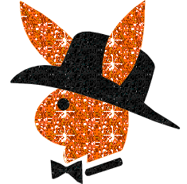
46
"First passion: he enjoyed secreting an emetic in the girl's food, unbeknownst to her; his"
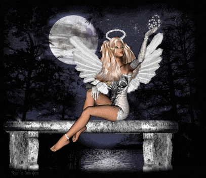
second passion: he mixes a certain powder with her snuff, or sprinkles it on some flowers, she inhales and straightway falls dead
47
First passion: he would flog her breasts and neck; refinement thereof: he aims a blow of a crowbar at her throat, it fells her forever
48
Duclos spoke of him on the 27th of November, Martaine on the 14th of January (verify the dates) : the whore enters and shits before the rake, he scolds her; brandishing a whip, he pursues her, she thinks to take refuge in a loft
"A door opens, she spies a little stairway, believes she will be safe, rushes up the steps, but one of them gives way and she plunges into a large vat of boiling water; she dies, scalded, drowned, asphyxiated"
His tastes are previously to have the woman shit and to lash her while she is doing so
"Curval had solicited and obtained shit from Zelmire that morning; now, directly the aforementioned tale is concluded, the Duc demands further shit from her"
"She cannot produce any; she is promptly condemned to have her ass pricked with a golden needle until it is covered with blood; in that it is the Duc whose interests have suffered as a result of her refusal, he is the one who recovers damages"
Curval requests shit of Zéphyr; the latter replies, saying that the Duc had him shit that morning
This the Duc denies, Duclos is called to give evidence, she supports Blangis' contention even though it is false
Consequently, Curval has the right to punish Zéphyr, despite the fact he is the Duc's bardash, just as the Duc has punished Zelmire, who is Curval's wife
"The Président flogs Zéphyr until the lad streams blood, then tweaks his nose six times; the tweaks fetch forth more blood, and that makes the Duc roar with laughter"
THE 10TH
Desgranges says that she is now going to discuss murders of imposture and duplicity in which the manner is of principal significance; that is to say, the murder itself is merely incidental
Wherewith, says she, poisonings will be presented first
""
"49"
A man whose caprice consisted in bum-fuckery and in no other kind, now envenoms all his wives; he is presently on his twenty-second
"Never does he fuck them save in the ass, nor have they ever been deflowered otherwise"
""
50
A bugger invites a number of friends to a banquet, and with each succeeding course a few of them are stricken with stomach cramps which prove fatal
51
Duclos spoke of him on the 26th of November, Martaine on the 10th of January; he is a bugger, pretends that it is relief he is giving the poor, distributes food, but 'tis poisoned
52
A treacherous bugger regularly employs a drug which, sprinkled on the ground, very wonderfully kills whosoever walks thereupon; he sprinkles it about rather frequently, and over wide areas
53
A bugger, equally skilled in alchemy, uses another substance which causes death after inconceivable torture; the death throes last a good two weeks, and no doctor has ever been able to diagnose or treat the ailment
He takes the keenest pleasure in paying you a visit while you are in the toils
54
"A sodomizer of men and women makes use of yet another powder which deprives you of your senses and renders you as if dead"
And such you are believed to be, you are buried, and full of despair, you die in your coffin, into which you have no sooner been placed than you regain consciousness
He endeavors to find the exact place you have been buried, to place an ear to the ground and listen for a few screams; if indeed he hears your cries, 'tis enough to make him swoon with pleasure
He thuswise slew part of his family
While joking and making merry that evening, Messieurs give Julie a powder concealed in her food, which causes her frightful cramps; they advise her that she is poisoned, she believes it, she wails, is beside herself
While watching her convulsions, the Duc has Augustine frig him directly opposite Julie
Augustine has the great misfortune of allowing the prepuce to slip back over the Duc's glans, and that is something which displeases the Duc extremely: he was just about to discharge, the girl's carelessness prevents it
He declares he is going to cut off one of that buggress' fingers and, as good as his word, does so, slicing a digit from the hand that failed him, and while cutting, he has his daughter Julie, still persuaded she is poisoned, crawl up to him and complete his discharge
Julie is cured that same evening
THE 11TH
55
"A consummate bugger would frequently dine at the home of friends or acquaintances and would never fail to poison the individual his host cherished most dearly amongst all living creatures"
"He employed a powder which finally slew after causing two days of atrocious agony"
56
An erstwhile breast-abuser has perfected his passion: he poisons infants being suckled by their nurses
""
"57"
He once used to love to receive back into his mouth milk enemas he had injected into his partner's rectum; his later passion: he administers toxic injections which kill while causing horrible spasms and colics
58
A crafty bugger of whom she will have occasion to say more on the 13th and the 26th, used to love to set fire to poorhouses, and would always see to it that a quantity of persons were consumed, above all children
59
"Another bugger liked to cause women to die in childbirth; he would come to pay his respects, bringing along a powder whose odor would cause spasms and convulsions ending in death"
""
60
"The man to whom Duclos referred during her twenty-eighth evening enjoys watching a woman bear a child; he murders it immediately it emerges from the womb and within full view of the mother, and does so while feigning to caress it"
That evening, Adelaide is first dealt a hundred lashes by each friend, and then, when she is well bloodied, shit is demanded of her; she gave some that morning to Curval, who swears 'tis not so
""
"Consequently, they burn her two breasts, the palm of each hand, spill drops of molten sealing wax upon her thighs and belly, fill her navel therewith, burn her pubic hair after having doused it with cognac"
"The Duc attempts to pick a quarrel with Zelmire, and the Président severs a finger from each of her hands"
Augustine is scourged about the cunt and asshole
THE 12TH
Messieurs assemble in the morning and decide that the four governesses, who are no longer of much use to the society and whose functions the four storytellers shall henceforth be perfectly able to carry out, may just as well provide the society with a little amusement; Messieurs therefore decree that the elders shall be martyrized one after another, the first sacrifice being scheduled for the evening of that same day
The four storytellers are invited to replace the elders; they accept upon condition they shall suffer no ill-treatment
Messieurs promise to subject them to none
61
The three friends, d'Aucourt, the abbot, and Desprès, of whom Duclos spoke on the 12th of November, are now living abroad and still enjoying each other's company, and this is one of their common passions: they require a woman whose pregnancy is in its eighth or begun its ninth month, they open her belly, snatch out the child, burn it before the mother's eyes, and in its place substitute a package containing sulphur and quicksilver, which they set afire, then stitch the belly
up again, leaving the mother thus to perish in the midst of incredible agonies, while they look on and have themselves frigged by the girl they have with them
"(Verify the girl's name"
) 62
"He was fond of depucelating, has gradually broadened his scope of activity: he has a great number of children by several women, then, when they reach the age of five or six, he depucelates them, boys and girls alike, and directly he has fucked them, throws them into a blazing oven"
Or he sometimes throws them in at the same moment he discharges
63
"The man Duclos mentioned on the 27th of November, Martaine on the 15th of January, and she herself on the 5th of February, whose taste was to play at hanging, to see hanged, etc"
, this same fellow, I say, hides some of his personal effects in his domestics' wardrobes and declares he has been robbed
He strives to have his servants hanged, and if he succeeds goes to watch the spectacle; if not, he locks them in a room and strangles them to death
"While operating, he discharges"
64
"An inveterate shit-lover, he of whom Duclos spoke on the 14th of November, has a specially prepared commode at his home; he engages his intended victim to sit down upon it, and once the victim is seated, the seat buckles, gives way, and precipitates the sitter into a very deep ditch filled with shit, in which environment she is left to die"
65
A man to whom Martaine made reference and who would amuse himself watching a girl fall from a ladder, has perfected his passion thus (but find out which man): He situates the girl upon a little trestle on the edge of a deep ditch filled with water; on the farther side of it is a wall which seems to be all the more inviting, what for the ladder leaning against it
But to reach the ladder she must cross the moat, and she becomes all the more willing to spring into the water as the fire burning behind the trestle moves gradually closer to her
If she hesitates too long, the fire will reach her, consume her, and as she does not know how to swim, she will be drowned if she plunges into the water
While she is considering what to do, the fire approaches, and she finally elects to struggle with a different element and endeavor to get to the wall
It frequently happens that she drowns; if so, the game is over
But if by good fortune she reaches the other bank and then the ladder, and starts to climb it, toward the top there is a rung which breaks beneath her weight and she drops into a hole covered over with a thin layer of earth, and the hole contains a bed of live coals upon which she perishes
Hard by the scene, the libertine observes it with the keenest interest, frigging himself industriously
66
The same man Duclos spoke of on the 29th of November, the same who bumwise
depucelated Martaine when a little girl of five, and also the same with whom Desgranges announces she will conclude her narrations (the hell episode) , this individual, I say, embuggers the prettiest girl of sixteen or eighteen the procuress can find for him
Sensing his crisis about to arrive, he releases a spring, upon the bare and completely unadorned neck of the girl descends a machine furnished with steel teeth; the machine begins to move laterally and gradually saws through the pinioned neck while the libertine occupies himself with completing his discharge
Which always takes a very long time
That very evening Messieurs discover the intrigue involving Augustine and one of the subaltern fuckers; he has not yet fucked her, but to attain his ends has suggested that they both escape from the castle, and he has outlined to her a very easy way to do so
Augustine confesses that she was about to grant him what he sought from her in order to save herself from a place where she believes her life to be in danger
"'Tis Fanchon who discovers and reports everything"
The traitorous quadrumvirate leap upon the fucker without warning, bind him hand and foot, and take him down to the cellars, where the Duc embuggers him with extreme vigor and without pomade, while the Président saws through his neck and the other two apply red-hot irons to all parts of his body
This scene transpires directly after dinner is over and hence coffee is omitted that day; the work completed, everyone repairs to the auditorium as usual, then to supper, and amongst themselves Messieurs debate whether, in return for having disclosed the conspiracy, they ought not accord Fanchon a reprieve, for their decision that morning was to maltreat her the same evening
The Bishop declares himself against sparing her, and says that it would be unworthy of them to yield to the sentiment of gratitude, and that, for his part, he will always be seen to favor any decision likely to afford the society one pleasure more, just as he will always vote against any motion apt to deprive it of a pleasure
And so, after having punished Augustine for lending herself to the subversive scheme, first by obliging her to watch her lover's execution, then by embuggering her and making her believe her head would be cut off as well, next by actually pulling out two of her teeth, an operation performed by the Duc while Curval was embuggering that beautiful girl, finally by giving her a sound whipping, after all that, I say, Fanchon is led into the arena, made to shit, given a hundred lashes by each of the friends, and then the Duc deftly shaves off her left nipple
She raises a storm, criticizing their behavior toward her and describing it as unjust
"Were it just,"
says the Duc, wiping his razor, "it would surely fail to give us an erection
" Whereupon they dress the old whore's wounds, eager to preserve her for further ordeals
Their Lordships perceive that indeed there had been faint but definite rebellious stirrings amongst the subaltern fuckers; the prompt sacrifice of one of them has, however, thoroughly quelled their
murmurs
Like Fanchon, the three other duennas are divested of all responsibility, removed from office, and replaced by the four storytellers and Julie
They tremble, do the old dames; but by what shifts are they to escape their fate?
"THE 13TH"
67
A great connoisseur of the ass, he declares his love for a girl and, having arranged a boating party, lures her upon the water in a small boat, the which has been prepared for the outing, springs a leak, founders; the girl is drowned
He sometimes pursues his objective by different means: will, for example, lead a girl out upon a high balcony, have her lean upon the railing, which gives way; and once again the girl dies
""
68
A man, while making his apprenticeship in life, was content first to whip and then to embugger; now, having reached a mature age, entices the girl to enter a specially prepared room; a trap door yields beneath her step, she falls into a cellar where the rake awaits her; he plunges a knife into her breasts, her cunt, and into her asshole as she lies stunned by her fall
Next, he casts her, dead or still alive, into another cellar, over which a stone drops into place; she tumbles upon a heap of other corpses, and she expires in a great fit if life has not already departed her sore-beset frame
And he is very careful to administer delicate stabs, for he would prefer that she live a little and finally perish in the cellar mentioned latterly
"Prior to all this, he of course embuggers and flogs her and discharges; 'tis coolly and with utmost method he proceeds to her undoing"
69
A bugger has the girl mount astride an untamed, unbroken horse which unseats her, drags her along a rocky terrain, and finally pitches her over a precipice
70
Martaine's hero of the 18th of January whose juvenile passion was to distribute little mounds of gunpowder upon the girl's body, has made significant progress
He lays the girl in a special bed; when properly tucked in, the bed gives way, dropping her into a large brazier of live coals, but she is able to scramble out of it; however, he is standing by and, as she repeats her attempts to escape the fire, he drives her back, wielding a pitchfork and with it aiming stout blows at her belly
71
The gentleman she mentioned on the 11th, who likes to burn down poorhouses, endeavors to lure a beggar, whether a man or a woman, from out of one and into his own home, upon the pretense of bestowing charity; he embuggers his victim, then breaks his back and leaves him thus discomfited to die in a dungeon
72
"He who was wont to defenestrate a woman, hurling her upon a dung heap, the same man of"
whom Martaine spoke, by way of second passion executes the following one: he allows the girl to sleep in a room she is acquainted with and whose window she knows to be not far above the ground; she is given opium, when in a deep slumber she is conveyed to another chamber, identical with the first but having a window high above the ground which, on this side of the house, is strewn with sharp rocks
Next, the libertine enters where she lies sleeping, makes a dreadful noise, terrifies her; she is informed that she is about to die
"Knowing the drop from the window to the ground to be short, she leaps through it, but falls thirty feet and lands upon the murderous rocks, killing herself"
No one has so much as laid a finger upon her
In the character of a woman, that great histrionic, the Bishop, marries Antinoüs, whose role is that of a husband, and also weds Céladon, whom he takes to be his wife, and 'tis that evening the child is embuggered for the first time
""
This ceremony celebrates the festival of the fifteenth week; to complete the holiday, the prelate wishes to expose Aline to some severe vexations, for his libertine rage against her has been quietly but steadily mounting: she is hanged, then quickly cut down, but while seeing her however briefly aloft, everyone discharges
"Durcet opens her veins, this treatment restores her to life; the next day she appears none the worse for wear, but suspension has added an inch to her height; she relates what she experienced during the ordeal"
The Bishop, for whom everything is an occasion of jollity and everyone the object of game that day, cuts one of old Louison's nipples clean off her breast; whereupon the other two duennas see very clearly what their fate is to be
THE 14TH
"73"
A man whose simple taste was to flog a girl, perfects it by every day removing morsels of flesh the size of a pea from the girl's body, but her wounds are not dressed, and thus she perishes over a low fire, as it were
Desgranges announces that she will now deal with exceedingly painful murders wherein 'tis the extreme cruelty which comprises the main element; Messieurs more strongly than ever urge her to furnish abundant details
""
74
He who was fond of letting blood daily relieves his victim of a half ounce of it, continuing till she is dead
Messieurs greet this example with hearty applause
75
He who was wont to prick the ass with many pins every day administers a more or less superficial gash with a poignard
The blood is stanched, but the wound is not treated, neither does it mend, and thus 'tis a slow death she dies
A fustigator (75) quietly and slowly saws off all four limbs, one after the other
76
The Marquis de Mesanges, of whom Duclos spoke in connection with the shoemaker Petignon's daughter, bought by the Marquis from Duclos, and whose first passion was to undergo four hours of flogging without discharging, for a second passion places a little girl in the hands of a giant fellow who holds the child by the head over a large charcoal brazier which burns her very slowly; the victims must be virgins
"77"
"His first passion: little by little to burn the breasts and buttocks with the flame of a match; his second: over every part of the girl's body to plant a forest of sulphur-coated slivers, which he lights one by one"
"He watches her die in this way"
""
""Nor is there anymore painful way to die," observes the Duc, who then confesses to having surrendered himself to this infamous pastime, and to having discharged vigorously thanks to it"
"They say that the patient lives six hours, sometimes eight"
""
Céladon's ass is made generally available that evening; the Duc and Curval indulge themselves heavily
Constance's pregnancy is still on the Président's mind; he suggests that she be bled, and bleeds her himself while discharging in Céladon's ass, then he lops off one of Thérèse's nipples while embuggering Zelmire, and the Duc sodomizes the duenna during the amputation
"THE 15TH"
78
Once beguiled by the charms of a mouth to suck and saliva to swallow, he is now of sterner stuff: every day he inserts a funnel into the girl's mouth and pours a small dose of molten lead down her throat; she gives up the ghost on the ninth day
""
79
First a finger-twister, he currently breaks all her limbs, tears out her tongue, gouges out her eyes, and leaves her thus to live, diminishing her sustenance day by day
"80"
A perpetrator of sacrilege, the second one Martaine mentioned on the 3rd of January, he secures a beautiful youth to a tall cross, binding him with cords and leaving him there as food for ravens
"81"
An armpit-sniffer and -fucker, to whom Duclos alluded, binds a woman hand and foot and hangs her by a rope looped under her arms; he goes every day to prick some part of her body so that the blood will attract flies; her death is by slow degrees
82
A passionate admirer of asses rectifies his worship: he now seals a girl in an underground cave where she has food to last three days; before leaving her, he inflicts several wounds upon
her body, thuswise to render her death more painful
He wishes to have them virgins and spends a week embracing their asses before organizing their destruction
83
Formerly he loved to fuck very youthful mouths and asses; his later improvement consists in snatching out the heart of a living girl, widening the space that organ occupied, fucking the warm hole, replacing the heart in that pool of blood and fuck, sewing up the wound, and leaving the girl to her fate, without help of any kind
In which case the wait is not long
Still wroth with the lovely Constance, Curval maintains that there is no reason under the sun why one cannot successfully bear a child even though one has a broken limb, and therefore they fracture that unlucky creature's arm the same evening
Durcet slices off one of Marie's nipples after she has been well warmed by the lash and made copiously to shit
THE 16TH
84
A fustigator refines his passion: he learns and then practices the art of gently removing flesh from bones; he then extracts the marrow, usually by sucking it out, and pours molten lead into the cavity
"At this point the Duc loudly exclaims that he'll not fuck another ass while he lives if that isn't the very ordeal he has had in mind for his beloved Augustine; that poor girl, whom Blangis has been embuggering for some time, utters cries and sheds a torrent of tears"
"And as thanks to her misbehavior she interferes with his discharge and frustrates it effectively, he withdraws, takes hold of his engine in one hand, and while with the other he gives her a dozen slaps which resound through that wing of the castle, he manages his discharge very satisfactorily by himself"
"85"
A bugger uses an ingenious machine to chop the girl into small pieces: this is a Chinese torture
"86"
Weary of his early fondness for girls' pucelages, his latest passion is to impale a girl upon the point of a sharp pickaxe introduced into her cunt; there she sits, as if upon a horse, he ties a cannon ball to each of her legs, the pick works deeper, and she is left to her own devices and a slow death
""
87
A fustigator flays the girl thrice over; he soaks her fourth layer of skin with a devouring escharotic which brings about death accompanied by hideous agonies
"88"
His first passion was to sever a finger; his second is to pluck up some flesh with a pair of red-hot tongs, to cut off the flesh with a pair of scissors, then to burn the wound
"He is quite apt to"
spend as long as four or five days whittling away a girl's body piecemeal, and she ordinarily dies while the cruel operation is still advancing
""
Sophie and Céladon have been found amusing themselves together and are punished that evening; both are whipped over their entire bodies by the Bishop, whose chattels they are
Sophie loses two fingers to the shears, Céladon as many; but he recovers very quickly
The Bishop is no less eager to use them in his pleasures, however they be maimed
Fanchon returns to the center of the stage
After having been beaten with a bull's pizzle, the soles of her feet are burned, each thigh, before and behind, is burned also, her forehead too, and each hand as well, and Messieurs extract all her remaining teeth
The Duc's prick is almost continually wedged into her ass throughout this lengthy operation
""
Mention that it has been prescribed by law that a subject's buttocks shall be left intact until the day the said subject reaches the end of his career
THE 17TH
89
"Martaine's gentleman of the 30th of January and the same one she herself described on the 5th of February, pares away a girl's breasts and buttocks, eats them, and upon her wounds puts plasters which so violently burn the flesh that they are her undoing"
He also forces her to eat her own flesh, which he has had grilled
90
A bugger cooks up a little girl in a double boiler
""
91
A bugger: he has her roasted alive on a spit directly after embuggering her
92
A man whose initial passion was to have little girls and boys embuggered in his presence by massive and ponderous pricks, impales the girl, a spear in her ass, and leaves her thus to die while he studies her contortions
93
"Another bugger: attaches a woman to a wheel, it is then set in motion and, without having done her any previous harm, he allows her to die a very pretty death"
""
That evening, the Bishop, his spirits in a great ferment, wishes to have Aline tormented, his rage against her has reached its fever pitch
She makes her appearance naked, he has her shit and embuggers her, then, without discharging, he withdraws in a towering fury from that enchanting ass and injects a rinse of boiling water into it, obliging her to squirt it out at once, while it is still boiling hot, upon Thérèse's face
After that, Messieurs hack off all the fingers and toes Aline has
left, break both her arms and burn them with red-hot pokers
She is next flogged, beaten, and slapped, then the Bishop, still further aroused, cuts off one of her nipples, and discharges
Wherewith they transfer their attentions to Thérèse, the interior of her vagina is seared, her nostrils, tongue, feet, and hands are all burned too; then she is given six hundred lashes with a bull's pizzle
Out come the rest of her teeth, fire is introduced into her throat
A witness to these harsh proceedings, Augustine falls to weeping; the Duc lashes her belly and cunt until he has drawn a suitable amount of blood therefrom
THE 18TH
94
A flesh-sacrificer in his early days, his adult entertainment consists in quartering girls by bending four saplings, attaching an arm or leg to each, and releasing the trees, which spring back erect
95
A fustigator suspends her from a machine which lowers a girl into and immediately lifts her out of a fire, then repeats the operation until there is very little left of the patient
96
"He once loved to extinguish candles by snuffing them out upon flesh; today, he envelopes her in sulphur and uses her for a torch, being careful to prevent the fumes for choking her"
97
A sodomist: rips the intestines from a young boy and a young girl, puts the boy's into the girl, inserts the girl's into the boy's body, stitches up the incisions, ties them back to back to a pillar which supports them both, and he watches them perish
98
"A man who was fond of inflicting light burns, improves his passion: he now roasts his victim upon a grill, turning him over and over again"
Michette is, that evening, exposed to the libertines' fury; all four begin by whipping her, then each tears out one of her teeth, they cut off four fingers (each friend amputates one), her thighs are burned in four places, two in front and two behind, the Duc manhandles one of her breasts until it is truly unrecognizable, sodomizing Giton in the meantime
Louison is next on the bill of fare; she is made to shit, she is given eight hundred strokes with the bull's pizzle, she is divested of all her teeth, her tongue is burned, as is her asshole, her vagina, and her remaining nipple, and so are six places upon her thighs
When everyone has retired to bed for the night, the Bishop goes in search of his brother, they wake Desgranges and Duclos, and the four of them take Aline down into the cellars; the Bishop
embuggers her, the Duc embuggers her, they pronounce the death sentence, and by means of excessive torments which last until daybreak, they execute it
Upon returning, they exchange words of unqualified praise for these two storytellers and advise their colleagues to undertake no serious projects without their help
THE 19TH
99
He places the woman so that the base of her spine bears upon the sharpened head of a tall post, her four limbs are held in the air only by light cords; the effects of her suffering make the lecher laugh incontinently, the torture is frightful
""
100
A man who used to enjoy cutting small steaks from the girl's rump has become absolutely a butcher: he has the girl sandwiched between two heavy planks, then slowly and carefully sawed in two
101
An embuggerer of both sexes has brother and sister fetched in; he declares to the brother that he is about to die a horrible death, and shows the young man all the deployed tackle he proposes to use; however, the libertine continues, he will save the brother's life if he will fuck his sister and strangle her at once
"The young man agrees, and while he fucks his sister, the libertine embuggers now one of them, now the other"
Then the brother, fearing for his life, deprives her sister of hers, and the moment he completes that operation, both he and his dead sister tumble through a trap door into a capacious charcoal brazier, wherein the libertine watches them be consumed
102
A bugger compels a father to fuck his daughter in his presence
Next, the father holds the daughter, the bugger sodomizes her; after which he informs the father that the girl absolutely has to perish, but that he has the alternatives of killing her himself by strangling her, which will cause her little suffering, or, in that other case, if her prefers not to kill his daughter, then he, the libertine, will do the work, but the father shall have to witness it all, and his child's agonies will be atrocious
Rather than see her undergo frightful tortures, the father decides to kill his daughter with a noose of black silk, but while he is preparing to dispatch her, he is seized, bound, and before his eyes his child is flayed alive, then rolled upon burning iron nails, then cast into a brazier, and the father is strangled; this, says the libertine, is to teach him a lesson not to be so eager to choke the life out of his own children, for 'tis barbaric
Afterward, he is dumped into the same brazier wherein his daughter perished
103
"A great devotee of asses and of the lash brings together mother and daughter"
He tells the
girl that he is going to kill her mother if she, the girl, does not consent to the sacrifice of both her hands; the little one agrees, they are severed at the wrist
Whereupon these two creatures are separated; a rope suspended from the ceiling is slipped around the girl's neck, she stands upon a stool; another cord runs from the stool into the next room and the mother is requested to hold the end
She is then invited to tug on the cord: she pulls it without knowing what she is doing, she is led directly into the first room to contemplate her work, and during that moment of her keenest distress, she is smitten down by a saber blow aimed at her head from behind
Jealous of the pleasure the two brothers had the night before, Durcet, that evening, is moved to suggest that they vex Adelaide, whose turn, he assures the society, is soon to come
"And so Curval, her father, and Durcet, her husband, worry her thighs with white-hot thongs while the Duc's unlubricated member sounds her ass"
The tip of her tongue is pierced, the ends of both her ears are shorn away, with the aid of instruments Messieurs dispossess her of four teeth, and then she is given a savage whipping
That same evening, the Bishop bleeds Sophie while her dearly beloved friend, Adelaide, watches the blood issue from the child's veins; the fountains are kept turned on until Sophie loses consciousness; as he bleeds her, the Bishop embuggers her, remaining in her ass throughout the operation
"While Curval is sodomizing him, Narcisse loses a pair of fingers, then Marie is hailed into court, red-hot irons are thrust into her cunt and asshole, more irons are applied to six places upon her thighs, upon her clitoris, her tongue, upon her one remaining breast, and out come the remainder of her teeth"
THE 20TH
104
"Champville's of the 5th of December, the man who was wont to have the mother prostitute her son and hold him while he embuggered the lad, improves his taste by bringing the mother and son together"
He tells the mother that he is about to kill her, but will spare her if she will murder her son
In case she refuses to do so, he slits the boy's throat before the woman's eyes
"Or if she consents: then she is bound to her son's dead body and left quietly to meditate and finally to die"
105
"A very incestuous personage assembles two sisters after having embuggered both of them; he binds them to a machine, each has a knife in her hand: the machine is set in motion, the girls are brought suddenly together and mutually kill each other"
106
"Another devotee of incest requires a mother and her four children"
They are locked into a room; he observes them through a small barred window
"He gives them nothing to eat in order to"
study the effects of famine upon this woman, and to discover which of her children she will eat first
107
Champville's of the 29th of December, who liked to flog pregnant women, calls for a mother and daughter, both of whom must be gravid: they are tied to a pair of steel plates one set above the other; the women face one another; the machine starts, the jaws of the vise close with great speed and power, the two women are ground to dust, together with their fruit
""
108
A very buggerish gentleman entertains himself in the following manner: he assembles lover and mistress:
""There is in all the world but one person who stands in the way of your happiness," says he, taking the lover aside; "I am going to put that individual in your power"
"
And he leads him into an obscurely lit chamber containing a bed; upon it someone lies asleep
"Greatly aroused, the young man takes dagger in hand and stabs his enemy"
When he has had done, he is permitted to recognize his mistress' dead body: 'twas she he slew; he kills himself in despair, or if he does not, the libertine kills him with a shot from a rifle, fired at a distance, not daring to enter the room with the furious young man who still has a weapon in his hand
"Previously, he fucked the youth and his beloved too, they singly yielded to him in the hope he would help them and bring them together, it is after having enjoyed them he rids the world of them"
In celebration of the sixteenth week, Durcet, as a woman, marries Invictus, who enacts a masculine role; and as a man he takes Hyacinthe to be his wife; the ceremonies are performed that evening and, by way of festivity, Durcet wishes to torment Fanny, his feminine wife
"Consequently, her arms are burned, so are her thighs in six separate places, two teeth are extracted from her mouth, she is flogged; Hyacinthe, who loves her and who is her husband thanks to the voluptuous arrangements hitherto described"
Hyacinthe, I say, is obliged to shit into Fanny's mouth, and she to eat the turd
"The Duc pulls out one of Augustine's teeth and immediately afterward fucks her in the mouth"
"Fanchon reappears, she is bled, and while blood flows from her arm, her arm is broken; next, they remove her toenails and sever the fingers from both her hands"
"THE 21ST"
She announces that the following examples are of buggers who wish to commit exclusively masculine murders
109
He buries the muzzle of a shotgun in the boy's ass, the weapon is loaded with buckshot and he has just finished fucking the lad
He pulls the trigger; the gun and his prick discharge simultaneously
""
"110"
He obliges the lad to watch his mistress being mutilated, and to eat her flesh, principally her buttocks, breasts, and heart
He has the option of eating these meats, or of dying of hunger
As soon as he has devoured them, if 'tis that he elects to do, the libertine inflicts several deep wounds upon him and leaves him thus to bleed to death; if he abstains from eating, he then starves to death
111
He tears off the youth's testicles and, a short while later, serves them up to him in a ragout, then, in place of the stolen treasure, substitutes spheres of quicksilver and fills his voided scrotum with sulphur a-plenty, which cause such violent suffering that the patient succumbs
During his agony, the libertine embuggers him and increases the boy's trouble by burning him here, there and everywhere with sulphur-impregnated slivers, and by scratching, picking, and further burning these wounds
112
He drives a long spike through the victim's asshole and thus nails him to a slender pole, and leaves him to sigh away his last hours, or days
113
He embuggers, and whilst sodomizing, opens the cranium, removes the brain, and fills the cavity with molten lead
"Vigorously fustigated beforehand, Hyacinthe's ass is made generally available that evening"
""
"Narcisse is presented to the assembly: off come his balls with a snip of the scissors"
Adelaide is summoned forth, a red-hot fire shovel is brushed over the rear of her thighs, they burn her clitoris, pierce her tongue, lash her breasts with cruel instruments, cut off the two little buttons on her breasts, break both her arms, carve away her remaining fingers, tear the hair from her cunt, tear a handful of hair from her head, pull out six of her teeth
Thus discomfited, she causes Messieurs to discharge every one save the Duc who, his livid prick straining upward, demands leave to exercise Thérèse all alone
Leave so to do is accorded him; using a pocketknife, he pries out all her nails and, as he proceeds, burns her fingers with a candle, then he fractures one of her arms, and still he does not discharge; very wroth, he leaps upon Augustine, encunts her and tears out one of her teeth as he spills his seed into her womb
THE 22ND
114
He breaks a young boy on the rack, then affixes him to a wheel upon which he
is left to expire: upon the wheel he is turned in such a way as to expose his buttocks, and the scoundrel, his tormentor, has his table set beneath the wheel, and dines there every day until the patient is no more
""
"115"
He flays a young boy, rubs his body with honey, and invites the flies to the feast
""
116
He slices off his prick and breasts, nails one of his feet to a post, one of his hands to another post, and thus he is left to expire with however little dignity
117
The same man who had made Duclos take supper with his dogs, owns a lion too, and, arming a boy with a light stick, introduces the youngster into the lion's cage
They boy's defense only further arouses the animal; the libertine watches the contest and discharges when the loser is completely devoured
"118"
Clothed in a mare's skin, his asshole smeared with mare's fuck, a small boy is surrendered to an excited horse
The libertine observes their struggle and the boy's death
Giton is subjected to tortures that evening: the Duc, Curval, Hercule, and Bum-Cleaver penetrate his ass ungreased
He is whipped very lustily, Messieurs extract four of his teeth, cut off four of his fingers (as always, each friend has a share in the despoiling of the victim), and Durcet crushes one of his balls between thumb and forefinger
"All four gentlemen soundly flog Augustine"
"Her glorious ass is soon washed in blood, the Duc embuggers her while Curval severs one of her fingers, then Curval marches into the breach while the Duc six times sears her thighs with a hot iron; Blangis snips away yet another finger the same instant his colleague discharges, and despite all this rough treatment, she spends the night, a stormy one, in the Duc's bed"
Marie sustains a broken arm, her fingernails are drawn out, her fingers burned
That same night, Durcet and Curval, seconded by Desgranges and Duclos, accompany Adelaide to the cellars
Curval gives her a farewell embuggering, then they cause her to die in the throes of terrible sufferings, which you will give in full detail
"THE 23RD"
119
"He places a young boy in a machine which stretches him, dislocating his bones; he is meticulously and thoroughly broken, then removed from the machine, given a chance to recover his breath, exposed to the process again; and so it continues for several days, until the patient's death"
"120"
He has a pretty girl pollute and fatigue a young boy; he is drained very dry indeed, but still the girl toils over him, he is given no nourishment, and eventually dies in horrible convulsions
"121"
"In the space of a single day, he performs four operations upon the young man: a gallstone removal, a trepanning, the excision of a fistula in the eye, of one in the anus"
"He knows just enough about surgery to botch all four operations; then he abandons the patient, giving him no further help and watching him expire"
122
After having sheared off the boy's prick and balls, using a red-hot iron he hollows out a cunt in the place formerly occupied by his genitals; the iron makes the hole and cauterizes simultaneously: he fucks the patient's new orifice and strangles him with his hands upon discharging
123
"He massages him with a currycomb; when he has generally abraded his flesh in this fashion, he rubs him with alcohol, ignites it, resumes his combing, rubs again with alcohol, relights the torch, proceeding in this wise till death makes further care unnecessary"
""
That same evening, Narcisse's turn arrives to be vexed; fire is applied to his thighs and little prick, then Messieurs crush his two balls
They turn again to Augustine upon the recommendation of the Duc, whose spiteful attitude toward her seems only to have worsened; they burn her thighs and armpits, a very hot bar of iron is rammed into her cunt
"She faints, the Duc waxes all the more furious, he shears off one of her nipples, drinks her blood, breaks both her arms, and tears out her cunt hair, all her teeth, and cuts off every finger left on her hands, cauterizing the wounds with fire"
And once again 'tis in his bed she sleeps, or rather lies, that night, for if one is to believe Duclos, he fucks her fore and aft the whole night long, repeatedly telling her that the day about to dawn will be her last
Louison appears, they break one of her arms, burn her tongue, her clitoris, tear out all her nails, and burn the tips of her bleeding fingers
Curval sodomizes her in this state and, in his rage, twists and manhandles one of Zelmire's breasts while discharging
Not content with those abuses, he catches hold of her again and whips her until he cannot lift his arm
""
THE 24TH
124
The same man Martaine referred to on the 1st of January wishes to embugger the father while his two children observe, and as he discharges, he stabs one child to death with one hand, and with his other strangles the other
125
His first passion was to flog the bellies of pregnant women; his second is to assemble six of them whose pregnancy has reached the end of the eighth month: he ties them back to back, their bellies prominently thrust forward: he splits open the belly of the first, perforates the belly of the second with dagger thrusts, gives a hundred kicks to the third's, a hundred blows of a club deflates the belly of the fourth, he burns the fifth's, applies a rasp to the sixth's, and then, using a truncheon upon her belly, he finishes off whichever amongst them has survived his treatment
Curval interrupts the narrations with some furious scene or other, this passion having had a great effect upon his mind
126
The seducer mentioned by Duclos assembles two women
Says he to the first: "Deny God and religion if you wish to live," but his valet has whispered to her, telling her to say nothing, for if she does, she shall surely be killed, but by keeping silent she shall have nothing to fear
Hence, she is mute; he blows out her brains, murmuring, "There's one for God
" He calls the second; struck by the example of the first and remembering what she has been told before entering the room, that she has no choice but to renounce belief in God and religion if she is to save herself, she assents to all he proposes: he blows out her brains: "And there's another for the Devil
" The villain plays that little game every week
127
He is a great bugger and he is fond of giving dances, but the ceiling in the salon is of a special order, it collapses as soon as the room is filled, and nearly everyone perishes
Were he to remain living in the same city for any length of time, he would be detected, but he moves frequently; he is eventually found out, but only after having given his fiftieth dance
"128"
Martaine's of the 27th of January, whose taste is to promote abortions, establishes three pregnant women in three cruel postures, composing an artistic group
Thus situated, they give birth while he looks on, then he ties each infant to its mother's neck until the little creature either dies or is eaten, for the libertine keeps the women just where they are and gives them no food
""
The same personage has yet another passion: he has two women whelp in his presence, blindfolds them, and after having himself identified the infants by some mark, he puts them side by side and bids each woman go and recover each her own offspring; if the ladies are not mistaken, he permits their young to live, but if they are in error, he carves up the children with a saber
""
Narcisse is presented at the evening orgies
"While the Bishop sodomizes the little fellow, Durcet relieves him of his remaining digits and inserts a red-hot needle into his urethral canal"
They bid
Giton step forth, he is kicked about, 'tis a lively game of ball they play with him, three of the friends fracture one of his legs while the Duc embuggers him
""
"Zelmire's turn: they roast her clitoris, sear her tongue, bake her gums, extract four of her teeth, burn her thighs in six places before and behind, snip away her nipples, unfinger both her hands, and when she is thus prepared to afford pleasure, Curval embuggers her"
"But he does not discharge"
Up steps Fanchon
Their attentions cost her an eye
Escorted by Desgranges and Duclos, the Duc and Curval make a journey to the cellars with Augustine in the course of that night; her ass has been preserved in excellent condition, 'tis now lashed to tatters, then the two brothers alternately embugger her, but guard their seed, and then the Duc gives her fifty-eight wounds in the buttocks, pours boiling oil into each gash
"He drives a hot iron into her cunt, another into her ass, and fucks her wounded charms, his prick sheathed in a sealskin condom which worsens the already lamentable state of her privities"
That accomplished, the flesh is peeled away from the bones of her arms and legs, which bones are sawed in several different places, then her nerves are laid bare in four adjacent places, the nerve ends are tied to a short stick which, like a tourniquet, is twisted, thus drawing forth the aforesaid nerves, which are very delicate parts of the human anatomy and, which, when mistreated, cause the patient to suffer much
Augustine's agonies are unheard-of
""
She is given some respite and allowed to recruit her strength, then Messieurs resume work, but this time, as the nerves are pulled into sight, they are scraped with the blade of a knife
The friends complete that operation and now move elsewhere; a hole is bored in her throat, her tongue is drawn back, down, and passed through it, 'tis a comical effect, they broil her remaining breast, then, clutching a scalpel, the Duc thrusts his hand into her cunt and cuts through the partition dividing the anus from the vagina; he throws aside the scalpel, reintroduces his hand, and rummaging about in her entrails, forces her to shit through her cunt, another amusing stunt; then, availing himself of the same entrance, he reaches up and tears open her stomach
Next, they concentrate upon her visage: cut away her ears, burn her nasal passages, blind her eyes with molten sealing wax, girdle her cranium, hang her by the hair, attach heavy stones to her feet, and allow her to drop: the top of the skull remains dangling
She was still breathing when she fell, and the Duc encunted her in this sorry state; he discharged and came away only the more enraged
They split her belly, opened her, and applied fire to her entrails; scalpel in hand, the Président burrows in her chest and harasses her heart, puncturing it
in several places
"'Twas only then her soul fled her body; at the age of fifteen years and eight months thus perished one of the most heavenly creatures ever formed by Nature's skillful hand"
"Etc"
Her eulogy
THE 25TH
That morning, the Duc takes Colombe to be his wife and hereafter she performs all a wife's functions
129
A great connoisseur of the ass and a man mightily fond thereof, he embuggers the mistress while the lover looks on, then the lover while his mistress watches, then he nails the lover over the mistress' body and leaves them to expire, mouth to mouth
"Such will be the end of Céladon and Sophie, who are in love, and Messieurs interrupt the storyteller to oblige Céladon himself to spread a little hot sealing wax on his dear Sophie's thighs; while obeying the instructions, he collapses: while lying unconscious, he is embuggered by the Bishop"
130
He who was wont to amuse himself by throwing a girl into water and pulling her out, has as his second passion that of casting seven or eight whores into a pond and watching them thrash about, for they are poor swimmers
He tenders them an iron pike, but it is heated red hot; still they cling to it, but he thrusts them away, and that they the more certainly perish, he has amputated one limb from each of them before throwing them in
"131"
"His earlier caprice was to cause vomiting; his improvement thereof is, by using a secret means, to spread the plague throughout an entire provence: he has brought about the death of a truly incredible number of people"
He also poisons wells and streams
132
Fond of employing the whip, he has three pregnant women locked in an iron cage, and with them he imprisons their three children; a fire is lit beneath the cage, its occupants caper and dance more and more in earnest as the floor heats; the women take the children in their arms, and finally fall and die in this manner
(That one belongs somewhere further above; move it to its proper place
) 133
'Twas he who pricked with an awl; more of a man today, he seals a pregnant woman in a chest whose interior is studded with sharp nails; he then has the chest rolled and dragged through the garden
""
These tales of pregnant women being chastised have proven as woeful to Constance's ears as they have delighted Curval's; she sees only too well what the future holds in store for her
As her fatal hour is drawing nigh, Messieurs are of the opinion her vexations may be inaugurated: her thighs are burned in six places, molten wax is allowed to trickle upon her navel, and her breasts are teased with pins
Giton appears, a burning needle is run through his little member, his little balls are stabbed, four of his teeth are extracted
Then comes Zelmire, whose death is not far off; deep into her cunt runs a red-hot poker, six wounds are inflicted upon her breasts, a dozen upon her thighs, needles are driven into her navel, each friend bestows twenty strong blows upon her face
They forcibly remove four of her teeth, her eye is pricked, she is whipped, she is embuggered
While in the act of sodomizing her, Curval, her husband, gives her intelligence of her death, scheduled for the morrow; she declares she is not sorry to learn the tidings, for 'twill put a period to her sorrows
Rosette steps forward; four teeth are jerked from her mouth, each of her shoulders is branded, her thighs and calves are gashed and hacked; she is then embuggered while several hands worry her breasts
And now Thérèse advances; out comes an eye, a hundred blows of the bull's pizzle rain down upon her scrawny back
THE 26TH
134
A bugger takes his stand at the foot of a tower; the earth about him is studded with sharpened steel rods pointing upward; his associates pitch several children of both sexes from the top of the tower
He has previously embuggered them, and now enjoys seeing them impaled a second time
"'Tis, he considers, very thrilling to be splashed by their blood"
135
"The same personage she cited on the 11th of February, whose tastes ran to instigating combustions, also delights in binding six pregnant women to bundles of inflammable materials; these he sets afire, and if his victims undertake to save themselves, he awaits them, pitchfork in hand, skewers them and hurls them back into the blaze"
However, when half-roasted, the floor gives way and they spill into a large vat of boiling oil, wherein they finally perish
136
He is the nobleman Duclos spoke of, who has no fondness for the poor and who bought Lucile, her mother, and her sister, and whom Desgranges has also cited (verify this) ; another of
his passions is to assemble a family of beggars over a mine and to watch those luckless creatures blown to bits
"137"
A notorious sodomist, in order to combine that crime with those of incest, murder, rape, sacrilege, and adultery, first inserts a Host in his ass, then has himself embuggered by his own son, rapes his married daughter, and kills his niece
138
Greatly partisan to asses, he strangles a mother while embuggering her; when she is dead, he turns her over and cunt-fucks her corpse
"While discharging, he kills her daughter with a knife, slashing her breasts, then he embuggers the girl even though she is dead; then apparently convinced there is still some life in his victims, and fancying they are jet capable of suffering, he hurls the cadavers into a fire and discharges as he watches them burn"
Duclos spoke of this wealthy individual on the 29th of November: 'twas he who liked to see the girl lying on the pallet covered with black satin; he is also the same man who figured in Martaine's first tale of the 11th of January
The evening's program begins with Narcisse
One of his hands is lopped off
Giton loses a hand too
The interior of Michette's cunt is burned, the same treatment is given Rosette's, and then both girls are burned upon the body and breasts
"But Curval, who has lost control of himself, violates the society's charter and cleaves an entire breast from Rosette's chest, all the while embuggering Michette"
Thérèse makes a further appearance; she receives two hundred blows of the bull's pizzle and loses her other eye
Curval goes in search of the Duc that night when all is still and, accompanied by Desgranges and Duclos, those two champions take Zelmrire down to the cellars where the most refined tortures are put to use upon her: they are all much more painful, more severe than the others employed upon Augustine, and the two men are still hard at work by the time breakfast arrives the following morning
That enchanting girl dies at the age of fifteen years and two months
'Twas she who could boast the most beautiful ass in the harem of little girls
And thus deprived of a wife, the Président weds Hébé the next day
THE 27TH
The seventeeth and last week's festival is postponed until the morrow, in order that
"the holiday may coincide with the end of the narrations; Desgranges recounts the following passions:"
139
"A man Martaine described on the 12th of January, the one who set off fireworks in the woman's ass, has, for his second, this other passion: he ties two pregnant women together so that they form a ball and fires them from a large mortar"
140
He was a scratcher and scab picker; he now places two pregnant women in a room and obliges them to fight with knives (he observes them from a safe position); they are naked, he threatens them with a gun he keeps trained upon them, and promises to shoot them dead if they begin to dally and falter
If they kill each other, why, that is precisely what he wishes, if not, sword in hand, he rushes into the arena and, after killing one, he disembowels the other and burns her entrails with aqua fortis, or with pieces of red-hot metal
""
141
A man who once liked to flog pregnant women's bellies has reformed: he presently binds a pregnant girl to a wheel and beneath it, fixed in a chair and unable to move, sits the girl's mother, her head flung back, her mouth open and ready to receive all the ordures and rubbish which flow out of the corpse, and the infant, too, if the girl gives birth to it
""
142
Martaine's of the 16th of January, whose joy was to prick asses, attaches a girl to a machine studded with sharp iron points; he fucks her as she lies upon that bed, with every blow of his loins he drives her upon the nails, then he turns her over and fucks her asswise, that she may also be punctured on the other side
When he has finished that phase of the operation, he lays a second plank above her, and it is likewise provided with nails; the planks are brought together by means of bolts, thus dies the patient, crushed and stabbed in a multitude of places
The pressing is carried out gradually, she is given ample opportunity to savor her pain
143
"A fustigator stretches a pregnant woman out upon a table; he nails her thereto, first driving a fiery nail into each eye, one into her mouth, another into either breast, then he burns her clitoris and nipples with a taper, and slowly saws her knees halfway through, breaks her legs, and ends by hammering a red-hot spike, of enormous size, into her navel: it undoes both mother and child"
He likes to have her ready to give birth
""
Messieurs whip Julie and Duclos that evening, but from amusement, since they are both amongst the inhabitants of Silling who shall transfer their residence to Paris: nevertheless, Julie's thighs are burned in two places, and she is depilated
Sentenced to die the next day but unaware of her impending fate, Constance appears; her nipples are scorched, molten wax is allowed to trickle down over her belly, she yields four teeth, Messieurs prick the white of her eyes with needles
Narcisse, also due to be immolated on the 28th of February, enters upon the stage; he loses an eye and four teeth
""
"Giton, Michette, and Rosette, destined to accompany Constance to the grave, each surrenders an eye and four teeth, Rosette her two nipples to the knife and six chunks of flesh, some of them carved from her arms, some from her thighs; all her fingers are neatly severed, and hot irons are introduced into her cunt and bum"
Both Curval and the Duc discharge twice
Up steps Louison; she weathers a storm of one hundred blows of the bull's pizzle; Messieurs pluck out one of her eyes and, most cynically, bid her swallow it
Down it goes
"THE 28TH"
144
A bugger: has two girls brought to him, they are fast friends, he ties them mouth to mouth, and by their side sits an excellent meal; but they cannot get to it, and he watches them bite and eat each other when hunger begins to exert its influence upon them
145
A man who as a boy was wont to flog pregnant women, now shuts six of this sort into a round cage formed by large iron hoops: they are all facing one another
Little by little, the hoops contract, little by little they are brought together, slowly they are flattened, gradually all six are crushed, their fruit crushed too
But prior to this he has cut a buttock and a breast from each and fashioned six collars therefrom; each woman wears one as you might a fur tippet
146
Another pregnant-woman beater binds two of these objects each to the end of a long tilting pole; a clever machine, into which the other ends of the poles are inserted, bumps and bangs the women against each other
These repeated collisions are their mutual undoing, and he discharges
"He makes every effort to procure himself a mother and daughter, or two sisters"
147
That Comte of whom Duclos spoke at length, and to whom Desgranges alluded once before on the 26th, he who purchased Lucile, Lucile's mother, and Lucile's little sister, of whom Martaine also spoke in her fourth tale on the 1st of January, this Comte, I say, has another passion still: 'tis to suspend three women over three holes
The first woman hangs by her tongue, beneath her is a very deep well; the second hangs from her breasts, underneath her lies a charcoal brazier; the scalp of the third has been loosened, she hangs by her hair over a pit studded with pointed iron rods
When the weight of their bodies causes these women to fall free—when the scalp is torn
from the head of the third, when the breasts of the second tear loose from her torso, when the tongue of the first is torn from her mouth—they only escape one difficulty in order to encounter a new one
Whenever possible, he suspends three pregnant women, or three women from the same family; such was his unkind use of Lucile, her sister, and her mother
""
148
"The last passion"
(But why the last? Where are the other two? They were all there in the original outline
) Desgranges recounts the last passion:
"The nobleman who indulges in this final passion we shall designate as the infernal caprice or, more simply, as the hell passion, has been cited four times: by Duclos in the last story she told on the 29th of November; by Champville, when referring to a personage who depucelates nine-year-olds only; by Martaine, as he who depucelates three-year-olds in the bum; by Desgranges who mentioned him in an early connection (establish that connection more precisely)"
He is a man of some forty years, enormous in stature and furnished with the member of a stallion: his prick is very near to nine inches in circumference and a foot in overall length; he is exceedingly wealthy, a very powerful lord, very harsh, very cruel, his heart is of stone
"He has a house on the outskirts of Paris which he uses for no purposes other than the gratification of this passion"
"The surroundings wherein he savors his delight is a spacious room, simply decked, but padded everywhere, the floor covered with mattresses; upon entering the room one sees a single long casement window, the room has no other opening save for the door; that window looks down upon an underground cellar, twenty feet below the salon where he busies himself, and looking out, one sees the mattresses which break the fall of the girls as he flings down into the cellar, a description whereof we shall give shortly"
He requires fifteen girls for this party; their ages must be between fifteen and seventeen, neither more, nor less; he employs six procuresses in Paris, as well as twelve in the provinces, and they are to spare no efforts, no expense to find him everything of the most charming that may possibly be found of that age, and as it is collected, the material is sent to a country convent over which he has absolute control, and there, in that nursery, the girls ripen, and from it he selects the fifteen objects for his debauch, which is regularly executed every fortnight
That evening before the ceremony begins, he personally examines the said material, the least defect in which warrants its rejection; he insists that his creatures be perfect models of beauty
Escorted by a procuress, they arrive at the house and are lodged in a room adjacent to the
"pleasure-salon"
They are first exhibited to him in this adjoining chamber, all fifteen are naked
He touches, feels, fondles, experiments with them, he scrutinizes them, sucks their mouths, and one after the other has them all shit into his mouth
But he does not swallow
"This initial operation performed with dreadful seriousness, he brands each upon the shoulder, imprinting a number in her flesh; it is to indicate the order in which he will receive them"
That done, he goes alone into the salon, where he remains for a brief space: no one knows what he does in this moment of solitude
Then he knocks
Girl Number 1 is cast into his lair
And she is properly cast into it: the procuress flings her toward him, he catches her in his arms, she is naked
"He shuts the door, takes up switches and begins to flail her ass; after that he sodomizes her with his gigantic prick"
Never does he need any help
He does not discharge
His prick retires, still rock-hard; he seizes the switches again and returns to lashing the girl's back, the front and back of her thighs, then he lays her down again and deflowers her cunt; next, he goes back to beating her, now upon the breasts, both of which he seizes and grinds and kneads with all his strength, and he is a strong man
And now he picks up an awl and six times stabs her body, driving his point once into each bruised breast
After all that has been done, he opens the casement window, places the girl in the middle of the room, standing erect, at attention, facing the window; he stands behind her and, when all is ready, gives her a kick in the ass of such startling violence that she flies across the room, crashes against the windowsill, topples over it, and vanishes into the cellar
But before launching her, he slips a ribbon around her neck, thereby to signify which torture, according to his best belief, will be most suitable for that particular patient, which torture will prove most voluptuous to inflict upon her, and his acuity and judgment in these matters, his tact and discrimination are truly wonderful
And thus the girls pass one by one through his hands, the identical ceremony awaits them all, and thus he makes away with thirty maidenheads in a given day, and performs those heroic feats unscathed: not a drop of fuck does he lose
The subterranean apartment into which the girl tumble is furnished with fifteen different assortments of frightful torture machines, and an executioner, wearing the mask and emblems of a demon, wearing also the colors of his specialty, presides over each apparatus
The ribbon placed about the girl's neck corresponds in color with the torture to which she has been condemned, and directly she falls into the pit, the appropriate executioner steps forward, having recognized his victim, and drags her to the machine of which he has charge, but the tortures do not begin until the fifteenth has entered the gallery and been claimed by her demon
As soon as the entire complement has descended, our man, by now in a furious state after having depucelated thirty orifices without discharging, I say, makes his entrance into the infernal repair; he is practically naked, his prick glued against his belly
"Everything is ready, all the tortures are in motion, and they proceed simultaneously, amidst much noise"
"The first torture engine is a wheel upon which the girl is strapped and which, rotating uninterruptedly, bears against an outer circle studded with razors which everywhere scratch and tear and slice the unfortunate victim, but as the blades do not bite deep, only superficially, she turns for at least two hours before dying"
""
The second: the girl lies two inches above a red-hot iron plate which slowly melts her
Third: she is attached by the waist to a piece of burning iron, and all her limbs are twisted and frightfully dislocated
Fourth: the four limbs attached each to a spring which slowly moves away, gradually stretching her arms and legs until they are detached and the trunk falls into a brazier
Fifth: a red-hot cast-iron bell is place over her head, but the bonnet is several sizes too large, the iron does not touch her, but her brain slowly melts, her head is slowly grilled
""
Sixth: she is chained inside an iron tub of boiling oil
Seventh: she is held standing before a machine which, six times a minute, shoots a small dart into her body, and each time into a different place; the machine does not stop until she is entirely feathered
Eighth: her feet anchored in a furnace, a mass of lead very gradually descends upon her head, thrusting her further into the oven
Ninth: her executioner continually pricks her with a red-hot iron goad; she is bound before him, he thus meticulously works over every inch of her body
Tenth: she is chained to a pillar underneath a large glass dome, twenty famished reptiles devour her alive
""
Eleventh: a cannon ball attached to each foot, she is suspended by one hand, and if she falls, 'tis into a furnace
""
Twelfth: a hook is driven through her mouth; thus she hangs, a deluge of burning pitch incessantly pouring over her body
"Thirteenth: the nerves are pulled from her flesh and tied to cords which draw them further, and meanwhile burning nails are driven into her body"
Fourteenth: alternately torn with tongs and whipped upon her cunt and ass with martinets whose steel tips are heated red hot, and from time to time scratched with burning iron rakes
Fifteenth: she is poisoned by a drug which burns and rends her entrails, which hurls her into frightful convulsions, causes her to utter hideous screams, and insures her death; but it is slow, and she is the last to succumb
This is one of the most terrible of the ordeals
The villain walks about the torture chamber as soon as he arrives there, spends fifteen minutes contemplating each operation while swearing like of the damned and overwhelming the patient with unmentionable invectives
When toward the end he can bear no more of it and his fuck, captive for so long, is ready to escape him, he falls into a comfortable armchair whence he can observe the entire spectacle, two of the demons approach him, display their asses and frig him, and he squirts his seed while pronouncing shouts so stentorian that they rise above and totally blot out the din his fifteen patients are producing
And now he gets to his feet and leaves the gallery, the coup de grâce is given the girls who are not yet dead, their bodies are buried, and there's an end to it until the next fortnight comes round
"Wherewith Desgranges terminates her contribution; she is congratulated, toasted, acclaimed, etc…"
"Upon the morning of that day there had been the most ominous preparations for the great holiday Messieurs were meditating"
Curval, detesting Constance as he does, had been cunt-fucking her at a very early hour and while fucking her had imparted grave news to her
Coffee was served by the five victims, to wit: Constance, Narcisse, Giton, Michette, and Rosette
Horrid things were perpetrated in the salon; during the recitations the reader has just perused, the quatrains Messieurs had been able to arrange had been composed of naked children
"And as soon as Desgranges had brought her narrations to a term, Fanny had been marched to the fore: her remaining fingers and toes had been hacked off, and Curval had embuggered her without pomade, so had the Duc, so had the four first-rank fuckers"
Sophie was led into the center of the stage; Céladon, her lover, had been obliged to burn the
interior of her cunt, all her fingers had been severed, her four limbs bled, her right ear had been torn away, her left eye gouged out
Céladon had been constrained to lend his assistance in all these operations, and his least frown or lowest murmur was rewarded by a flogging with an iron-tipped martinet
Supper had come next, the meal had been voluptuous, Messieurs drank naught but sparkling champagne and liqueurs
"The torturing was arranged for the orgy hour; as the friends sat at dessert, word was brought to them that everything was in readiness, they descended and found the cellars agreeably festooned and very properly furnished"
"Constance lay upon a kind of mausoleum, the four children decorated its corners"
As their asses were still in excellent condition, Messieurs were able to take considerable pleasure in molesting them; then at last the heavier work was begun: while embuggering Giton, Curval himself opened Constance's belly and tore out the fruit, already well-ripened and clearly of the masculine sex; then the society continued, inflicting tortures upon those five victims
Their sufferings were long, cruel, and various
Upon THE 1ST DAY OF MARCH, remarking that the snows have not yet melted, Messieurs decide to dispatch the rest of the subjects one by one
Messieurs devise new arrangements whereby to keep their bedchambers staffed, and agree to give a green ribbon to everyone whom they propose to take back with them to France; the green favor is bestowed, however, upon condition the recipient is willing to lend a hand with the destruction of the other victims
Nothing is said to the six women in the kitchen; Messieurs decide to do away with the three scullery maids, who are well worth toying over, but to spare the cooks, because of their considerable talents
And so a list is drawn up; 'tis found that, to date, the following creatures had already been sacrificed: Wives: Aline, Adelaide, and Constance: 3
Sultanas: Augustine, Michette, Rosette, and Zelmire: 4
Bardashes: Giton and Narcisse: 2
Fuckers: one subaltern: 1
Total: 10
"The new ménages are arranged:"
The Duc takes unto himself, or under his protection: Hercule, Duclos, one cook: 4
Curval takes: Bum-Cleaver, Champville, one cook: 4
"Durcet takes: Invictus, Martaine, one cook: 4"
And the Bishop: Antinoüs, Desgranges, Julie: 4
Total: 16
Messieurs decide that, upon a given signal, and with the aid of the four fuckers and the four storytellers, but not the cooks whom they do not wish to employ for these purposes, they will seize all the others, making use of the most treacherous possible means and when their victims least expect it; they will lay hands upon all the others, I say, save for the three scullions, who will not be seized until later on; it is further decided that the upstairs chambers will be converted into four prisons, that the three subaltern fuckers, manacled, will be lodged in the strongest of these prisons; Fanny, Colombe, Sophie, and Hébé in the second; Céladon, Zélamir, Cupidon, Zéphyr, Adonis, and Hyacinthe in the third; and the four elders in the fourth; that one subject will be dispatched every day; and that when the hour arrives to arrest the three scullions, they will be locked into whichever of the prison happens to be empty
""
These agreements once reached, Messieurs appoint each storyteller the warden of one prison
And whenever they please, Messieurs will amuse themselves with these victims, either in their prison or in one of the larger rooms, or in their Lordships' bedchambers, depending upon Messieurs' individual preference
And so, as we have just indicated, one subject is dispatched daily, in the following order:
On the 1st of March: Fanchon
On the 2nd: Louison
""
On the 3rd: Thérèse
On the 4th: Marie
""
On the 5th: Fanny
On the 6th and the 7th: Sophie and Céladon together, for they are lovers, and they perish nailed
"one to the other, as we have hitherto explained"
"On the 8th: one subaltern fucker"
""
On the 9th: Hébé
On the 10th: another subaltern fucker
On the 11th: Colombe
On the 12th: the last of the subaltern fuckers
On the 13th: Zélamir
On the 14th: Cupidon
On the 15th: Zéphyr
On the 16th: Adonis
On the 17th: Hyacinthe
On the morning of the 18th, Messieurs and their cohorts seize the three scullions, lock them in the prison formerly occupied by the elders, and dispatch one upon that day
A second upon the 19th
""
And the last upon the 20th
""
Total: 20
The following recapitulation lists the inhabitants of the Château of Silling during that memorable winter:
Masters: 4
Elders: 4
Kitchen staff: 6
Storytellers: 4
"Fuckers: 8"
Little boys: 8
Wives: 4
Little girls: 8
Total: 46
Whereof thirty were immolated and sixteen returned to Paris
FINAL ASSESSMENT
Massacred prior to the 1st of March,
in the course of the orgies: 10
Massacred after the 1st of March: 20
"Survived and came back: 16"
Total: 46
With what regards the tortures and deaths of the last twenty subjects, and life such as it was in the household until the day of departure, you will give details at your leisure and where you see fit, you will say, first of all, that thirteen of the sixteen survivors (three of whom were cooks) took all their meals together; sprinkle in whatever tortures you like
 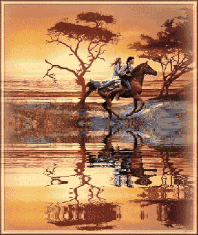
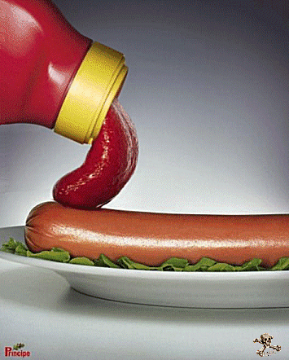
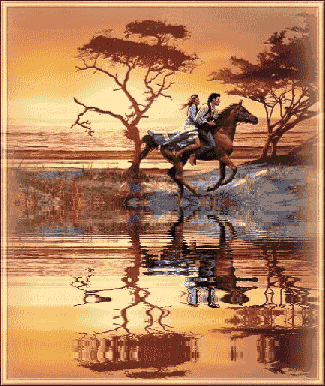
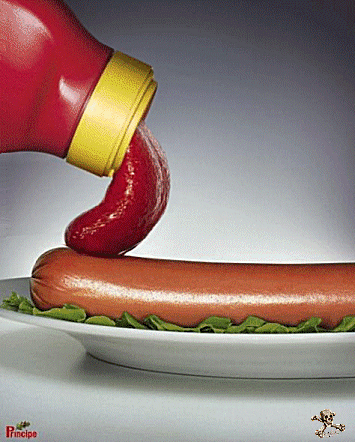


 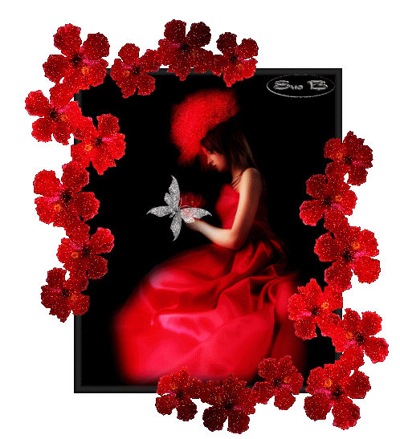
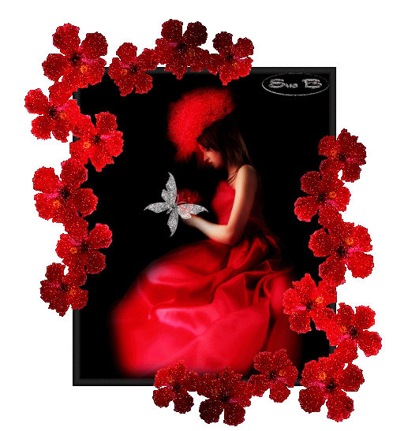

 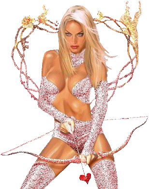
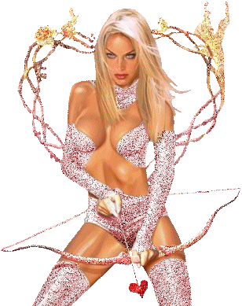


 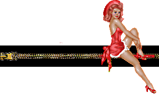
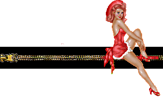
 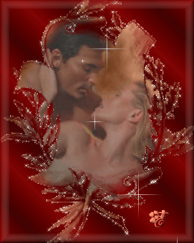
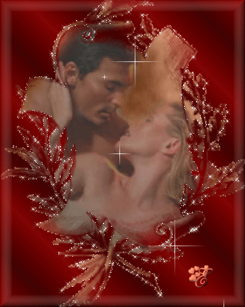


 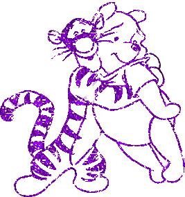
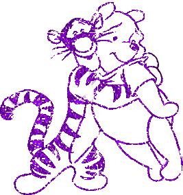


 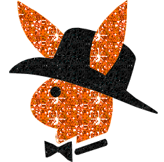
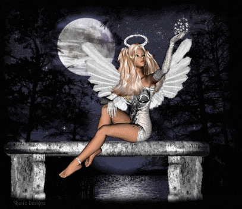
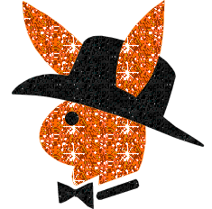
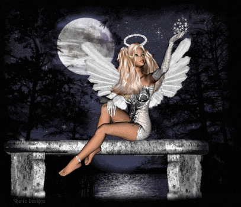